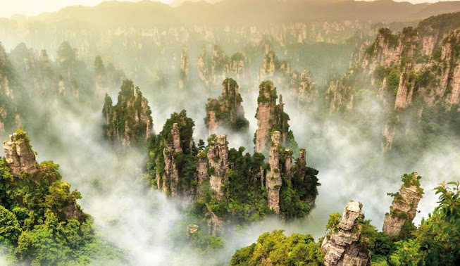
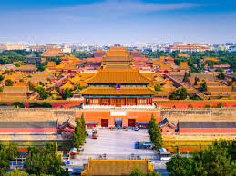
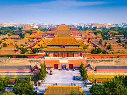
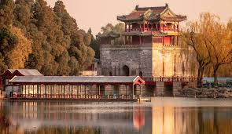
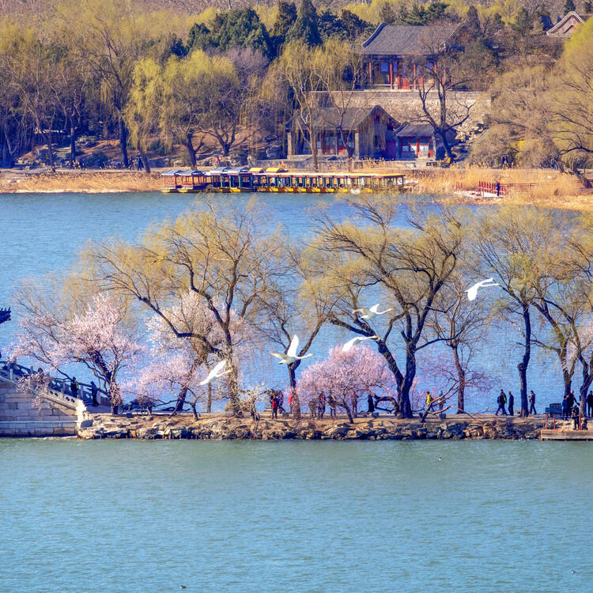
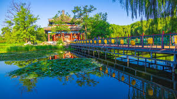
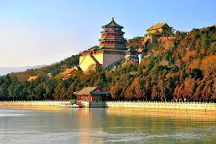

Wulingyuan Scenic and Historic Interest Area A spectacular area stretching over more than 26,000 ha in China's Hunan Province, the site is dominated by more than 3,000 narrow sandstone pillars and peaks, many over 200 m high. Between the peaks lie ravines and gorges with streams, pools and waterfalls, some 40 caves, and two large natural bridges. In addition to the striking beauty of the landscape, the region is also noted for the fact that it is home to a number of endangered plant and animal species.
Read more Forbidden City, imperial palace complex at the heart of Beijing (Peking), China. Commissioned in 1406 by the Yongle emperor of the Ming dynasty, it was first officially occupied by the court in 1420. It was so named because access to the area was barred to most of the subjects of the realm. Government functionaries and even the imperial family were permitted only limited access; the emperor alone could enter any section at will. The 178-acre (72-hectare) compound was designated a UNESCO World Heritage site in 1987 in recognition of its importance as the centre of Chinese power for five centuries, as well as for its unparalleled architecture and its current role as the Palace Museum of dynastic art and history. Forbidden City: Palace of Heavenly Purity Forbidden City: Palace of Heavenly PurityThe Palace of Heavenly Purity (Qianqinggong), Forbidden City, Beijing. The architecture of the walled complex adheres rigidly to the traditional Chinese geomantic practice of feng shui. The orientation of the Forbidden City, and for that matter all of Beijing, follows a north-south line. Within the compound, all the most important buildings, especially those along the main axis, face south to honour the Sun. The buildings and the ceremonial spaces between them are arranged to convey an impression of great imperial power while reinforcing the insignificance of the individual. This architectural conceit is borne out to the smallest of details—the relative importance of a building can be judged not only from its height or width but also by the style of its roof and the number of figurines perched on the roof’s ridges.
Read more 

The Summer Palace in Beijing integrates numerous traditional halls and pavilions into the Imperial Garden conceived by the Qing emperor Qianlong between 1750 and 1764 as the Garden of Clear Ripples. Using Kunming Lake, the former reservoir of the Yuan dynasty’s capital and Longevity Hill as the basic framework, the Summer Palace combined political and administrative, residential, spiritual, and recreational functions within a landscape of lakes and mountains, in accordance with the Chinese philosophy of balancing the works of man with nature. Destroyed during the Second Opium War of the 1850s, it was reconstructed by Emperor Guangxu for use by Empress Dowager Cixi and renamed the Summer Palace. Although damaged again during the Boxer Rebellion in 1900 it was restored and has been a public park since 1924. The central feature of the Administrative area, the Hall of Benevolence and Longevity is approached through the monumental East Palace Gate. The connecting Residential area comprises three building complexes: the Halls of Happiness in Longevity, Jade Ripples and Yiyun, all built up against the Hill of Longevity, with fine views over the lake. These are linked by roofed corridors which connect to the Great Stage to the east and the Long Corridor to the West. In front of the Hall of Happiness in Longevity a wooden quay gave access by water for the Imperial family to their quarters. The remaining 90% of the garden provides areas for enjoying views and spiritual contemplation and is embellished with garden buildings including the Tower of the Fragrance of Buddha, the Tower of the Revolving Archive, Wu Fang Pavilion, the Baoyun Bronze Pavilion, and the Hall that Dispels the Clouds. Kunming Lake contains three large islands, corresponding to the traditional Chinese symbolic mountain garden element, the southern of which is linked to the East Dike by the Seventeen Arch Bridge.
Read more    